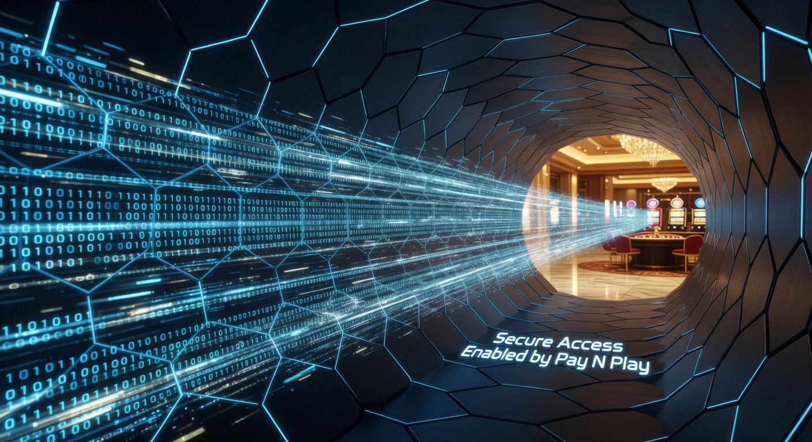
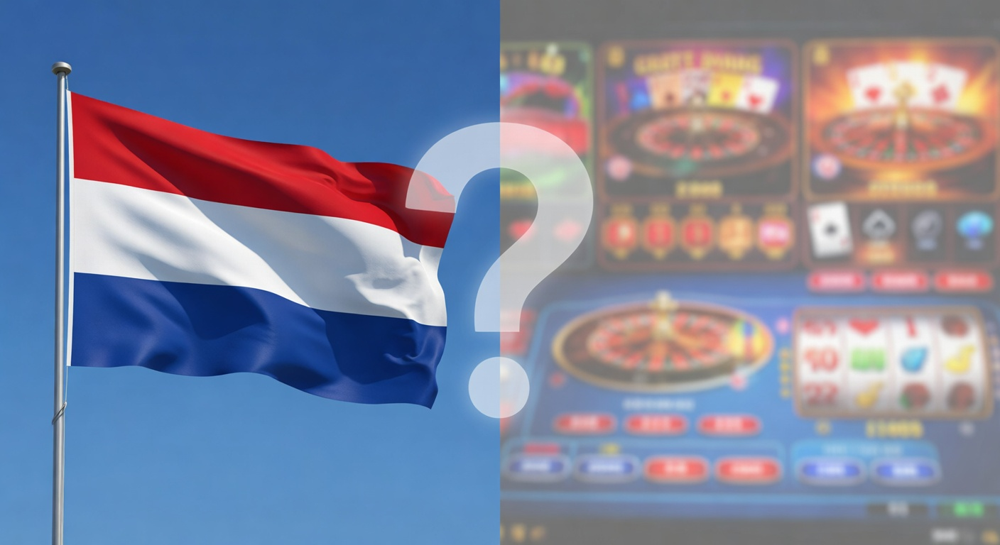
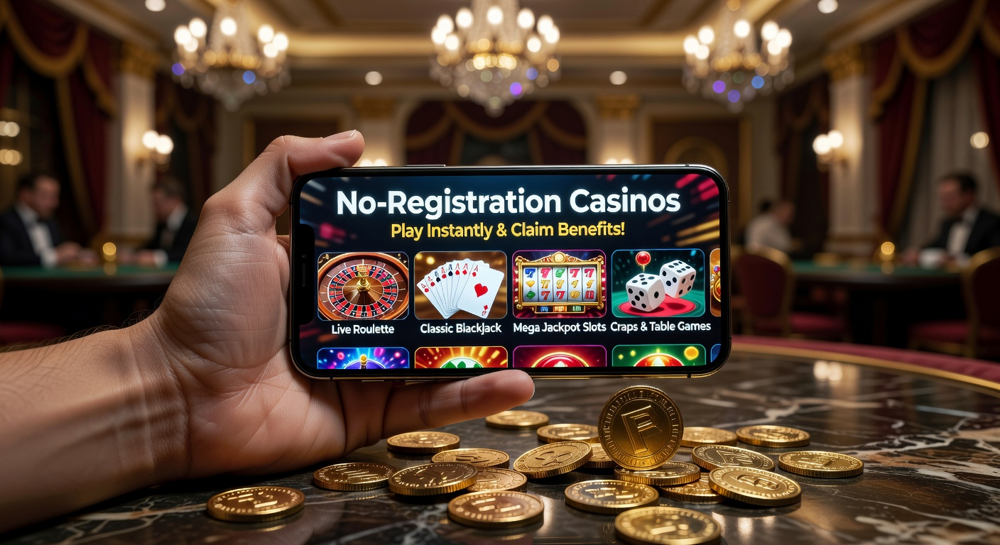
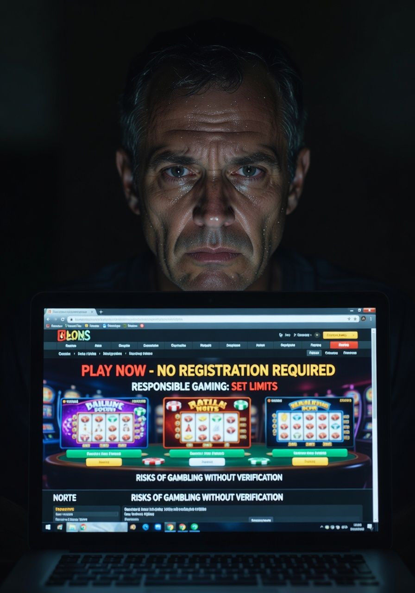
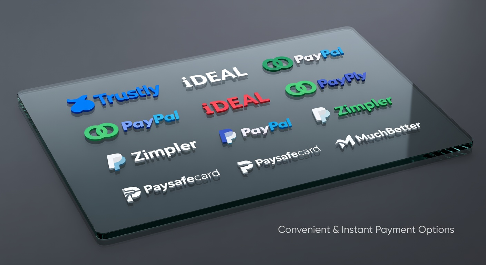

Online gokken zonder registratie: Gids voor No Account Casino’s 2026
Welkom bij de meest uitgebreide gids voor online gokken zonder registratie in 2026. Het landschap van de digitale gokwereld is de afgelopen jaren drastisch veranderd. Waar spelers voorheen nog lange formulieren moesten invullen en dagen moesten wachten op de verificatie van hun paspoort, is de snelheid nu de norm geworden. De opkomst van innovatieve technologieën heeft ervoor gezorgd dat je binnen enkele seconden kunt beginnen met spelen.
In 2026 is de behoefte aan privacy en efficiëntie groter dan ooit. Spelers in Nederland zoeken naar manieren om hun favoriete spellen te spelen zonder dat hun inbox wordt overspoeld met marketingmails. In dit artikel duiken we diep in de wereld van no-account platforms, de techniek achter Pay N Play, en de juridische status van deze diensten in het huidige jaar.
Of je nu een ervaren high-roller bent of een recreatieve speler die even snel een gokje wil wagen op een gokkast met een hoge RTP, deze gids biedt alle informatie die je nodig hebt. We analyseren de beste aanbieders, de veiligheidsaspecten en de fiscale gevolgen van online gokken zonder registratie in 2026.
Wat betekent online gokken zonder registratie precies?
Wanneer we praten over online gokken zonder registratie, bedoelen we niet dat er helemaal geen gegevens worden uitgewisseld. Het proces is echter fundamenteel anders dan bij een traditioneel online casino. In plaats van handmatig een account aan te maken met een gebruikersnaam, wachtwoord en adresgegevens, fungeert je bankrekening als je identiteitsbewijs.
Dit concept, ook wel bekend als "No Account Casino", maakt gebruik van je bankgegevens om op de achtergrond een uniek spelersprofiel te creëren. Op het moment dat je een storting doet, verifieert de bank je identiteit via het zogenaamde KYC-proces (Know Your Customer). Hierdoor hoeft de aanbieder deze stappen niet meer zelf te doorlopen, wat online gokken zonder registratie zo aantrekkelijk maakt voor de moderne gebruiker.
In 2026 zien we dat deze methode de standaard is geworden voor nieuwe aanbieders die de concurrentie aan willen gaan met gevestigde namen. Het elimineert de frictie bij het instappen, waardoor de conversie voor aanbieders stijgt en het gemak voor de speler maximaal is. Het is een win-win situatie waarbij technologie de bureaucratie vervangt.
De werking van Pay N Play technologie

De drijvende kracht achter de revolutie van online gokken zonder registratie is de Pay N Play technologie, oorspronkelijk ontwikkeld door de Zweedse betaalgigant Trustly. In 2026 is deze techniek verder verfijnd en geïntegreerd met moderne bank-apps, waardoor transacties nog soepeler verlopen dan voorheen.
Wanneer je een website bezoekt die deze technologie ondersteunt, zie je direct een knop met "Speel Nu" of "Stort". Er is geen registratieknop meer te bekennen. Zodra je de storting bevestigt via je bank, deelt de bank de noodzakelijke verificatiegegevens (zoals je naam en leeftijd) veilig met de exploitant. Dit proces voldoet volledig aan de Europese privacywetgeving (AVG).
Storten en verificatie via Trustly
Trustly blijft de onbetwiste marktleider in dit segment. Voor online gokken zonder registratie fungeert Trustly als de brug tussen jouw bank en het platform. Het mooie van dit systeem is dat de verificatie in real-time gebeurt. Terwijl het geld van je rekening wordt afgeschreven, wordt je account automatisch op de achtergrond opgezet.
In 2026 ondersteunen vrijwel alle grote banken in Europa deze directe koppeling. Dit betekent dat je niet alleen direct kunt spelen, maar dat je ook zeker weet dat je gegevens veilig zijn. Trustly gebruikt dezelfde encryptiestandaarden als banken, wat het een van de veiligste methoden maakt voor online gokken zonder registratie op de huidige markt.
De rol van iDIN bij snelle aanmeldingen
Naast Trustly speelt ook iDIN een cruciale rol, vooral binnen de Nederlandse grenzen. iDIN is een dienst ontwikkeld door banken waarmee consumenten zich kunnen legitimeren bij organisaties met de vertrouwde inlogmiddelen van hun eigen bank. Voor online gokken zonder registratie in 2026 wordt iDIN vaak gebruikt als extra verificatielaag om te voldoen aan de strenge eisen van de Nederlandse Kansspelautoriteit.
Hoewel iDIN technisch gezien een identificatiemethode is en geen betaalmethode, is de combinatie met iDEAL goud waard. Spelers kunnen zich binnen dertig seconden identificeren, waarna ze direct een storting kunnen doen. Dit is een hybride vorm van online gokken zonder registratie die perfect past binnen het wettelijke kader van 2026.
Is online gokken zonder registratie legaal in Nederland?

De legaliteit van online gokken zonder registratie is een onderwerp waar in 2026 veel discussie over bestaat. Volgens de Nederlandse wetgeving moeten aanbieders hun spelers altijd identificeren om witwassen te voorkomen en kwetsbare groepen te beschermen. Dit gebeurt vaak via het CRUKS register (Centraal Register Uitsluiting Kansspelen).
In Nederland is "puur" anoniem gokken niet toegestaan. Echter, casino's die gebruikmaken van Pay N Play of iDIN voldoen aan de identificatieplicht. De speler ervaart het als "zonder registratie" omdat hij zelf geen formulier invult, maar de wettelijke verificatie vindt op de achtergrond plaats. Hierdoor blijft online gokken zonder registratie binnen de grenzen van de wet, mits de aanbieder een geldige licentie heeft van de KSA.
Voor meer informatie over de regelgeving rondom kansspelen, kun je de officiële website van de Kansspelautoriteit raadplegen. Het is essentieel om alleen te spelen bij aanbieders die voldoen aan deze strikte eisen, zeker met de verscherpte toezichtmaatregelen van 2026.
✅ Voordelen van Casino’s Zonder Registratie

Waarom kiezen steeds meer spelers voor online gokken zonder registratie? De voordelen zijn talrijk en sluiten aan bij de snelle levensstijl van 2026. Hieronder hebben we de belangrijkste pluspunten op een rij gezet:
- Snelheid: Geen lange formulieren, geen uploaden van documenten en direct toegang tot het spelaanbod.
- Directe Uitbetalingen: Winsten staan vaak binnen 5 minuten weer op je bankrekening.
- Privacy: Je hoeft geen persoonlijke e-mail of telefoonnummer te delen, wat resulteert in minder spam.
- Veiligheid: De verificatie verloopt via je bank, die de hoogste beveiligingsnormen hanteert.
- Geen Wachtwoorden: Je hoeft geen ingewikkelde wachtwoorden te onthouden of te wijzigen.
Bliksemsnelle uitbetalingen naar je bankrekening
Een van de grootste frustraties bij een traditioneel casino met een registratieproces was altijd de wachttijd bij uitbetalingen. Bij online gokken zonder registratie behoort dit tot het verleden. Omdat je identiteit al is geverifieerd bij de eerste storting, hoeft de financiële afdeling van het casino geen handmatige controles meer uit te voeren bij een opnameverzoek.
In 2026 is de standaard voor uitbetalingen bij no-account casino's "instant". Dit betekent dat zodra je op de knop 'uitbetalen' klikt, de transactie via het SEPA Instant Credit Transfer netwerk wordt verwerkt. Voor veel spelers is dit de doorslaggevende factor om te kiezen voor online gokken zonder registratie boven traditionele methoden.
Privacy en minder marketing-spam
Privacy is een kostbaar goed in 2026. Bij online gokken zonder registratie geef je geen contactgegevens op voor marketingdoeleinden. Veel traditionele aanbieders gebruiken je data om je dagelijks te bestoken met sms-berichten en e-mails over nieuwe bonussen. Bij een casino zonder account heb je hier geen last van.
Je blijft in controle over wanneer en hoe je speelt. Je sessie is gekoppeld aan je bank-ID, en zodra je de website verlaat en je saldo uitbetaalt, is de verbinding verbroken. Dit aspect van online gokken zonder registratie spreekt vooral de privacybewuste Nederlander aan die zijn digitale voetafdruk minimaal wil houden.
Nadelen en risico's van gokken zonder registratie

Ondanks de vele voordelen, zijn er ook nadelen verbonden aan online gokken zonder registratie. Het is belangrijk om hier objectief naar te kijken voordat je besluit ergens geld te storten. Een belangrijk punt is dat je minder snel een band opbouwt met het casino, wat invloed kan hebben op loyaliteitsbeloningen.
Daarnaast is de klantenservice soms beperkter. Omdat er geen uitgebreid spelersprofiel is met een volledige historie die direct zichtbaar is voor elke medewerker, kan het oplossen van complexe problemen soms langer duren. Ook het ontbreken van bepaalde betaalmethoden zoals creditcards of e-wallets kan als een nadeel worden ervaren door spelers die gewend zijn aan variëteit.
| Kenmerk | Traditioneel Casino | Online gokken zonder registratie |
|---|---|---|
| Aanmeldtijd | 5 - 10 minuten | < 1 minuut |
| KYC Documenten | Vaak handmatig uploaden | Automatisch via bank |
| Uitbetalingssnelheid | 1 - 3 dagen | Direct (5 - 15 min) |
| Bonusaanbod | Zeer uitgebreid | Vaak Cashback of Free Spins |
| Marketing Spam | Hoog | Minimaal tot nihil |
Populaire betaalmethoden in no-account omgevingen

Hoewel Trustly de grondlegger is, zijn er in 2026 meer smaken bijgekomen voor wie wil gaan online gokken zonder registratie. De technologische integratie tussen fintech bedrijven en banken heeft geleid tot een breder scala aan opties die allemaal hetzelfde doel dienen: snelheid en veiligheid zonder gedoe.
In Nederland is de markt specifiek ingericht op de behoeften van de lokale consument. Dit betekent dat we oplossingen zien die naadloos aansluiten bij het dagelijks bankieren. De keuze voor een betaalmethode bepaalt vaak bij welk online casino een speler uiteindelijk belandt.
iDEAL versus buitenlandse alternatieven
In 2026 is iDEAL volledig vernieuwd en geoptimaliseerd voor de Europese markt. Hoewel het van oorsprong een Nederlandse methode is, wordt het nu breed geaccepteerd voor online gokken zonder registratie via slimme API-koppelingen. Het voordeel van iDEAL is het enorme vertrouwen dat de Nederlander erin heeft.
Buitenlandse alternatieven zoals Zimpler of Brite winnen echter ook aan terrein. Deze methoden werken op een vergelijkbare manier als Trustly en bieden vaak toegang tot internationale platformen waar online gokken zonder registratie mogelijk is. Voor de speler maakt het functioneel weinig uit; het gaat om de snelheid en de directe koppeling met de eigen bankomgeving.
Crypto casino opties en anonimiteit
Een groeiend segment binnen online gokken zonder registratie is het gebruik van cryptocurrencies. Hoewel de Nederlandse regelgeving hier streng op is, zijn er internationale aanbieders die Bitcoin, Ethereum en Solana accepteren. Dit biedt een nog hogere mate van anonimiteit, omdat er geen bank als tussenpersoon fungeert.
Toch kleven er risico's aan deze vorm van online gokken zonder registratie. De volatiliteit van crypto kan je winst (of verlies) beïnvloeden buiten het gokken om. Bovendien ontbreekt vaak de bescherming die een Europese banklicentie biedt. In 2026 adviseren experts daarom om voorzichtig te zijn met platforms die enkel en alleen crypto accepteren zonder enige vorm van toezicht.
Bonussen en free spins claimen zonder gedoe
Men denkt vaak dat je bij online gokken zonder registratie geen recht hebt op een welkomstbonus. Niets is minder waar. In 2026 zijn no-account casino's zeer creatief geworden in het aanbieden van incentives. Omdat ze geld besparen op administratie en marketing, kunnen ze vaak scherpere deals aanbieden aan hun spelers.
De meest voorkomende bonusvorm is de cashback. Hierbij krijg je een percentage van je eventuele verliezen terug, zonder dat daar ingewikkelde rondspeelvoorwaarden aan vastzitten. Ook free spins zijn enorm populair. Zodra je de eerste storting doet voor online gokken zonder registratie, worden de spins direct aan je saldo toegevoegd. Geen bonuscodes, geen gedoe.
In 2026 zien we ook de opkomst van "Wager-Free" bonussen bij een casino zonder registratie. Dit betekent dat alles wat je wint met je bonus of spins, direct cash geld is dat je kunt laten uitbetalen. Dit past perfect bij de filosofie van transparantie en snelheid die deze platforms uitstralen.
Veiligheid en verantwoord spelen buiten CRUKS
Een punt van zorg bij online gokken zonder registratie is verantwoord spelen. In Nederland zijn alle legale aanbieders aangesloten op het CRUKS register. Als je jezelf hebt uitgesloten, kun je nergens met een licentie spelen. Echter, sommige spelers zoeken bewust naar een online casino zonder CRUKS – 10 beste maart 2026 lijstjes om deze beperkingen te omzeilen.
Wij raden dit ten strengste af. De regels rondom CRUKS zijn er om spelers te beschermen tegen gokverslaving. Bij online gokken zonder registratie op een site zonder Nederlandse vergunning, loop je het risico dat er geen limieten zijn en dat je niet wordt beschermd bij problematisch gedrag. Veiligheid moet altijd de hoogste prioriteit hebben, ook in 2026.
Voor hulp bij gokproblemen kun je altijd terecht bij instanties zoals AGOG. Verantwoord spelen betekent dat je alleen geld inzet dat je kunt missen en dat online gokken zonder registratie een vorm van entertainment blijft, geen manier om geld te verdienen.
Wedden zonder registratie: De nieuwe standaard in 2026
Niet alleen casino-spellen zoals slots en roulette zijn populair; wedden zonder registratie op sportevenementen heeft een enorme vlucht genomen. Of het nu gaat om de Eredivisie, de Champions League of Formule 1, sportfans willen op het laatste moment een weddenschap kunnen plaatsen zonder eerst een account te hoeven verifiëren.
De technologie achter wedden zonder account is identiek aan die van no-account casino's. Je stort via je bank-app, de bookmaker herkent je identiteit, en je kunt direct je bet plaatsen. In 2026 zijn de odds bij deze aanbieders vaak concurrerender omdat hun overheadkosten lager zijn. Dit maakt wedden zonder registratie een aantrekkelijke optie voor de strategische speler.
Bovendien bieden veel van deze platforms live streaming diensten aan. Zodra je een storting hebt gedaan voor online gokken zonder registratie, krijg je vaak toegang tot de livestreams van de wedstrijden waarop je hebt ingezet. Dit verhoogt de spanning en de betrokkenheid bij het sportevenement aanzienlijk.
Casino Zonder Registratie NL 2026: De beste aanbieders
Wie zijn de koplopers in de markt voor online gokken zonder registratie in 2026? We hebben gekeken naar factoren zoals spelaanbod, uitbetalingssnelheid en betrouwbaarheid. Namen die steeds weer bovenaan de lijstjes verschijnen zijn Holyluck en Betninja. Deze platforms hebben hun sporen verdiend door een vlekkeloze gebruikerservaring te bieden.
Bij Holyluck ligt de focus op een gigantisch aanbod aan gokkasten met hoge RTP-percentages. Zij begrijpen dat de speler die kiest voor online gokken zonder registratie niet wil wachten op trage laadtijden. Betninja daarentegen blinkt uit in de combinatie van casino en sportsbook, waardoor het een all-in-one oplossing is voor de veelzijdige gokker.
Wanneer je een keuze maakt uit de vele opties voor online gokken zonder registratie, let dan altijd op de aanwezige licenties. Een licentie van de MGA (Malta Gaming Authority) is in 2026 nog steeds een sterk keurmerk voor betrouwbaarheid, ook al is het geen Nederlandse vergunning. Het biedt een basisniveau van spelerbescherming en eerlijk spel.
Beste Casino Zonder Registratie: Hoe maak je de keuze?
Het kiezen van het beste casino zonder registratie hangt af van je persoonlijke voorkeuren. Wil je de hoogste bonus, of vind je het belangrijker dat je winst binnen 60 seconden op je rekening staat? In 2026 is de concurrentie zo moordend dat je als speler kritisch kunt zijn.
Let bij je keuze voor online gokken zonder registratie op de volgende punten:
- Beschikbaarheid van je favoriete spelproviders (bijv. NetEnt, Pragmatic Play).
- De kwaliteit van het live casino aanbod.
- De transparantie van de bonusvoorwaarden.
- De responsiviteit van de mobiele website of app.
- Recensies van andere spelers over de uitbetalingservaring.
In 2026 is het ook steeds gebruikelijker dat een online casino personalisatie aanbiedt op basis van je speelgedrag, zelfs zonder vast account. Door middel van cookies (met jouw toestemming) onthoudt het platform je favoriete spellen, zodat je bij je volgende sessie direct verder kunt waar je gebleven was.
Alternatieven voor casino zonder verificatie in Nederland
Voor spelers die zich niet comfortabel voelen bij online gokken zonder registratie bij buitenlandse aanbieders, zijn er uitstekende alternatieven binnen de Nederlandse grenzen. Veel legale Nederlandse casino's hebben hun aanmeldproces in 2026 zo gestroomlijnd dat het bijna aanvoelt als een no-account ervaring.
Door het gebruik van iDIN en de automatische koppeling met de Basisregistratie Personen (BRP), is handmatige verificatie vaak niet meer nodig. Je doet een online aanmelding, bevestigt je identiteit via je bank-app, en je account is direct speelklaar. Dit is een veilig en legaal alternatief voor wie wel de snelheid wil, maar ook de volledige bescherming van de Nederlandse wet.
Deze "Fast Registration" casino's bieden vaak ook uitgebreidere loyaliteitsprogramma’s aan dan de typische no-account platforms. Als je van plan bent om vaker bij dezelfde aanbieder te spelen, kan dit op de lange termijn meer waarde opleveren dan telkens switchen tussen verschillende sites voor online gokken zonder registratie.
Snelle registratie bij legale casino’s
In 2026 hebben de grote namen in de Nederlandse markt, zoals TOTO en Holland Casino Online, hun techniek fors verbeterd. Het proces van online gokken zonder registratie heeft hen gedwongen om hun eigen processen te versnellen. De scheidslijn tussen een traditioneel casino en een no-account casino vervaagt hierdoor steeds meer.
Wat we nu zien is dat je bij een legale aanbieder binnen twee minuten een account hebt, inclusief de verplichte limieteninstelling. Dit laatste is cruciaal voor verantwoord spelen. Hoewel het een extra stap is vergeleken met puur online gokken zonder registratie, biedt het een vangnet dat bij veel buitenlandse aanbieders ontbreekt. De balans tussen snelheid en zorgplicht is hier optimaal gevonden.
Bovendien kun je bij deze legale aanbieders vaak gebruikmaken van lokale extra's, zoals fysieke prijzen of uitnodigingen voor evenementen in Nederland. Voor de speler die waarde hecht aan een lokale connectie en maximale juridische zekerheid, is dit in 2026 de beste weg om te bewandelen.
Spelaanbod van de top online casinos Nederland
Het spelaanbod bij online gokken zonder registratie is in 2026 werkelijk indrukwekkend. Je hebt toegang tot duizenden video slots, variërend van klassieke fruitautomaten tot complexe Megaways spellen. De technologische vooruitgang heeft gezorgd voor graphics die niet onderdoen voor moderne videogames.
Het live casino segment is misschien wel het meest gegroeid. Spelers kunnen in real-time aanschuiven bij tafels met echte dealers, vaak gestreamd in 4K kwaliteit vanuit studio's over de hele wereld. Of je nu houdt van Blackjack, Roulette of innovatieve Game Shows zoals "Crazy Time 2026", de ervaring is meeslepend en authentiek.
Voor wie houdt van online gokken zonder registratie, is het goed om te weten dat ook deze live spellen direct toegankelijk zijn. Je saldo dat je via Trustly of iDEAL hebt gestort, is universeel bruikbaar voor alle spellen op het platform. Het gemak van bij een casino spelen zonder barrières wordt hier echt tastbaar.
Online Casino iDEAL 2026 met iDealeCasinos
Een interessante ontwikkeling in 2026 is de nauwe samenwerking tussen informatieportalen en betaalproviders. Websites zoals iDealeCasinos helpen spelers bij het navigeren door het woud van aanbieders. Zij filteren specifiek op casino's die de combinatie van iDEAL en snelle verificatie aanbieden, wat essentieel is voor online gokken zonder registratie.
Deze portalen bieden vaak ook exclusieve bonussen aan die je niet direct op de site van de aanbieder vindt. Voor de slimme gokker is het raadplegen van dergelijke bronnen een vaste stap geworden in de zoektocht naar de beste plek voor online gokken zonder registratie. Het biedt een extra laag van verificatie en onafhankelijk advies in een complexe markt.
Daarnaast zie je in 2026 dat deze informatieportalen ook tools aanbieden om je eigen speelgedrag te monitoren over verschillende platforms heen. Zelfs als je kiest voor online gokken zonder registratie bij meerdere aanbieders, kun je zo toch het overzicht bewaren over je totale uitgaven en winsten.
Veelgestelde vragen over gokken zonder account
Hieronder beantwoorden we de meest prangende vragen die leven onder spelers in 2026 over online gokken zonder registratie.
Is online gokken zonder registratie veilig?
Ja, mits je speelt bij een gerenommeerde aanbieder. De techniek achter online gokken zonder registratie maakt gebruik van de beveiligingsprotocollen van je eigen bank. Hierdoor zijn je financiële gegevens beter beschermd dan bij veel andere online diensten.
Hoe zit het met de belasting over mijn winsten?
In 2026 hangt de belastingplicht af van waar het casino gevestigd is. Voor aanbieders met een Nederlandse licentie wordt de kansspelbelasting vaak al door de aanbieder afgedragen. Bij online gokken zonder registratie bij een buitenlandse aanbieder moet je mogelijk zelf aangifte doen bij de Belastingdienst. Raadpleeg altijd de actuele regels op de site van de Belastingdienst.
Kan ik mijn saldo laten staan voor de volgende keer?
Hoewel het mogelijk is om je browser te sluiten en later terug te komen (het casino herkent je via je bank-ID), raden we aan om bij online gokken zonder registratie je saldo aan het einde van je sessie direct uit te laten betalen. Het staat immers binnen enkele minuten weer op je rekening, wat de veiligste optie is.
Zijn er limieten aan stortingen bij no-account casino's?
Ja, ook bij online gokken zonder registratie gelden er limieten. Deze worden vaak bepaald door je bank of door de algemene voorwaarden van het platform. In 2026 zijn deze limieten vaak dynamisch en gebaseerd op verantwoord spelen algoritmes die je gedrag monitoren.
Wat als ik een probleem heb met een uitbetaling?
Elk legitiem platform voor online gokken zonder registratie heeft een klantenservice, meestal bereikbaar via live chat. Omdat je transactie een uniek ID heeft dat gekoppeld is aan je bank, kunnen problemen vaak snel getraceerd en opgelost worden.

Expert in online casino's en digitaal gokken met meer dan 8 jaar ervaring in de sector.